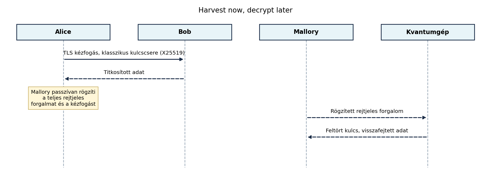

A hosszú távú titkosságot igénylő adatok esetében a klasszikus kriptográfia már ma is sebezhető, még akkor is, ha a nagyméretű kvantumszámítógép csak évek múlva jelenik meg. Ez az alfejezet azt vizsgálja, miért nem lehet halogatni a posztkvantum-migrációt, hogyan mérhető a sürgősség, és miként építhetők be a posztkvantum elemek a meglévő rendszerekbe anélkül, hogy a klasszikus biztonságot feladnánk.
A mai internetes forgalom jelentős része nyilvános kulcsú kulcscserét használ: a böngésző és a szerver Diffie–Hellman-alapú (X25519, ECDH) vagy RSA-alapú kulcscsere után szimmetrikus titkosítással védi az adatokat. A passzív támadó, aki lehallgatja a hálózati forgalmat, a rejtjeles üzeneteket elmentheti. Ma ezeket az üzeneteket nem tudja visszafejteni, mert a diszkrét logaritmus vagy a faktorizáció számítási nehézsége megvédi őket. Ha azonban a jövőben egy kellően nagy kvantumszámítógép válik elérhetővé, Shor algoritmusával ezek a matematikai problémák hatékonyan megoldhatók lesznek, és a támadó visszamenőleg feltörheti a rögzített forgalmat. Ezt nevezzük „gyűjtsd most, fejtsd vissza később” támadásnak (harvest now, decrypt later).
A fenyegetés különösen súlyos az olyan adatok esetében, amelyek évtizedekig is érzékenyek maradhatnak: egészségügyi adatok, államtitkok, vállalati üzleti titkok, biztonsági infrastruktúra. A kulcskérdés nem az, hogy a kvantumszámítógép mikor jelenik meg, hanem hogy az adat titkossági igénye és a migrációhoz szükséges idő együttesen meddig nyúlik.
A következő protokollrajz azt mutatja, hogyan rögzíti a passzív támadó a klasszikus kulcscserével védett forgalmat, majd a jövőbeli kvantumszámítógéppel visszafejti azt.

A rajz lényege: a támadónak nem kell valós időben feltörnie a kulcscserét; elég, ha a rejtjeles adatot elmenti, és a kvantumszámítógép megjelenésekor végzi el a faktorizációt vagy a diszkrét logaritmust. Ezért a hosszú titkossági igényű adatok esetében a klasszikus kulcscsere már ma sem nyújt megfelelő védelmet a jövőbeli támadó ellen.
Definíció (Harvest now, decrypt later – gyűjtsd most, fejtsd vissza később). Az a támadási stratégia, amelyben a támadó a jelenlegi klasszikus kriptográfiával védett rejtjeles forgalmat (kulcscsere-üzeneteket és titkosított adatokat) passzívan rögzíti, majd a jövőben egy elérhetővé váló nagy kvantumszámítógéppel (vagy más, a klasszikus feltevést megtörő eszközzel) visszamenőleg feltöri a kulcscserét és visszafejti az adatokat.
Definíció (Mosca-egyenlőtlenség). Legyen az érzékeny adat titkossági igénye években (azaz hány évig kell az adatnak bizalmasnak maradnia), a teljes posztkvantum-migráció időigénye években (a leltártól a teljes bevezetésig), és a nagy, kriptográfiailag releváns kvantumszámítógép megjelenéséig hátralévő idő években. Ha
akkor a szervezet már most kockázatnak van kitéve: az adat titkossági igénye és a migráció időtartama együttesen meghaladja a kvantumgép megjelenéséig rendelkezésre álló időt.
Ez az egyenlőtlenség nem pontos előrejelzés, hanem döntési keretrendszer: arra ösztönöz, hogy a bizonytalan érték miatt már korán elkezdjük a felkészülést. Ha értéke később csökken, a jobb oldal csökken, így az egyenlőtlenség könnyebben teljesül, és a kockázat nő.
Definíció (Hibrid kulcscsere – hybrid key exchange). Két vagy több kulcscsere-algoritmus párhuzamos futtatása, amelyben a részkimeneteket egyetlen kulcsba kombinálják. A kombinálás általában konkatenációval és kulcsszármaztatással történik:
ahol az i-edik kulcscsere-résztvevő által közösen kiszámított titok (pl. a DH-megosztott titok vagy a KEM-megosztott titok), pedig egy kriptográfiai kulcsszármaztatás. A hibrid kulcscsere biztonsági logikája: ha legalább az egyik részkulcscsere biztonságos marad, akkor a teljes kulcscsere is biztonságos. Ezt úgy mondják: a hibrid konstrukció „örökli” a résztvevők erősségét.
Definíció (Kriptoleltár – cryptographic inventory). A szervezet által használt kriptográfiai eszközök, protokollok, kulcstípusok és tanúsítványok strukturált nyilvántartása, amely tartalmazza, hogy az adott eszköz melyik rendszerben használatos, milyen adatokat véd, és mennyi ideig marad érzékeny.
Definíció (Kriptoagilitás – crypto-agility). Az informatikai rendszer azon képessége, hogy a kriptográfiai algoritmusok, kulcsméretek vagy protokollok cseréjét minimális költséggel, a rendszer leállása nélkül lehet végrehajtani. Ez nem azt jelenti, hogy az algoritmusok futás közben tetszőlegesen cserélhetők, hanem hogy a szoftverarchitektúra lehetővé teszi a rugalmas frissítést.
Tegyük fel, hogy egy kórház elektronikus egészségügyi adatokat kezel, amelyekre törvényi előírás szerint 15 év titkossági garanciát kell vállalni ( év). A szervezet becslése szerint a teljes migráció – a leltár elkészítése, a posztkvantum algoritmusok tesztelése, a rendszerek frissítése – 3 évig tart ( év). A szakértők becslése szerint a releváns kvantumszámítógép 10 éven belül megjelenhet ( év). Ekkor:
tehát a Mosca-egyenlőtlenség teljesül, a szervezet most kockázatnak van kitéve. A kitettség mértéke év: a migráció befejezéséig (3. év) titkosított adatoknak a 18. évig kellene titkosnak maradniuk, a kvantumgép viszont a 10. évben megjelenhet. Ha a szervezet csak a 10. évben kezd migrálni, a kitettség évre nő.
Az alábbi idővonal az egyenlőtlenség jelentését mutatja: a migráció előtt utoljára klasszikusan titkosított adatnak a -edik évig titkosnak kell maradnia, a kvantumgép pedig a -edik évben megjelenik. A kettő közötti átfedés a kitettségi ablak; , , mellett ez a 10–18. év, azaz 8 év. A változatban nincs átfedés.
Ha viszont a kvantumgép megjelenését 25 évre becsülik ( év), akkor , így a kockázat nem azonnali. Azonban a becslések bizonytalanok, ezért a szervezet akkor is ésszerűen jár el, ha már most elkezdi a felkészülést, mert a migrációs idő csökkentése és a titkossági igény pontos ismerete önmagában is védelmet nyújt.
A példa megmutatja, hogy a Mosca-egyenlőtlenség miért kényszeríti a szervezeteket arra, hogy idő előtt cselekedjenek, ne pedig a kvantumgép tényleges megjelenését várják.
A posztkvantum-migráció egyik legfontosabb eszköze a hibrid kulcscsere. A klasszikus kulcscsere (pl. X25519, ECDH) a diszkrét logaritmus feltevéstől függ, a posztkvantum kulcscsere (pl. ML-KEM, FIPS 203) a rácsok nehézségét használja. Mivel az ML-KEM viszonylag fiatal, ezért a hibrid megoldás megőrzi a klasszikus biztonságot arra az esetre, ha az ML-KEM-ben mégis sebezhetőséget találnak, és megőrzi a posztkvantum védelmet arra az esetre, ha a kvantumgép megjelenik.
A kombinálás konkrétan a következőképpen működik egy TLS 1.3-kulcscsere esetén (jelölve: X25519MLKEM768, ellenőrzési igény: a megnevezés a NIST és az IETF posztkvantum TLS-tervezeteiben használt, a pontos szerződéses név változhat; a hibrid kombinálást nem az RFC 8446, hanem a hibrid TLS-tervezetek írják le, és a konkatenáció sorrendje is ellenőrzendő):
ahol a a TLS kézfogás átirata (handshake transcript). Ha akár , akár ismeretlen marad a támadó számára, akkor nem kiszámítható.
A hibrid kulcscsere biztonsági logikáját formálisan is megfogalmazhatjuk: legyen a támadó előnye a hibrid kulcscsere feltörésében, a klasszikus kulcscsere, a posztkvantum kulcscsere feltörésében elért előny. A hibrid konstrukció redukciós bizonyítása megmutatja, hogy
ahol a konkatenáció és a KDF által bevezetett kis tényező (ellenőrzési igény: a pontos tényező a bizonyítási modelltől függ). Lényege: a hibrid kulcscsere csak akkor törhető, ha mindkét részkulcscsere törhető, vagyis a biztonsága az erősebb komponensé (a két rész biztonságának maximuma).
Továbbvitt eredmény. A hibrid kulcscsere ezt a kombinálási elvet használja, és ezt az elvet visszük tovább a NIST-szabványosítás és posztkvantum-TLS alfejezetbe, valamint a 4. projekt: posztkvantum-migrációs terv és hibrid kulcscsere záróprojektbe.
Nem minden kriptográfiai primitív fenyegetése egyforma. A kulcscsere esetében a passzív, rögzített forgalom miatt a kockázat azonnal fennáll: elegendő, ha a támadó ma rögzíti a TLS-kézfogást és a rejtjeles adatot, majd évekkel később Shor algoritmusával feltöri a kulcscserét. Ezért a kulcscsere posztkvantum-átállítása a legsürgősebb feladat.
A digitális aláírásoknál a fenyegetés más jellegű. Ha egy aláírást ma hitelesítenek (pl. egy szoftverfrissítés aláírását a telepítő ellenőrzi), akkor a kvantumszámítógép jövőbeli megjelenése nem teszi lehetővé a már megtörtént hitelesítések utólagos meghamisítását, feltéve, hogy a hitelesítés időpontjában az aláírás érvényes volt. A támadó azonban visszamenőlegesen hamis aláírást hozhat létre, ha a kvantumgép elérhetővé válik, és a támadó rendelkezik a nyilvános kulccsal. Ezért ha egy rendszerben a dokumentumokra nincs megbízható időbélyeg, és a felek később is vitathatják az aláírás hitelességét, a posztkvantum aláíró algoritmusokra való átállás is sürgős lehet. A gyakorlati sorrend azonban általában:
Ezt a sorrendet az is indokolja, hogy a kulcscsere kvantumfenyegetése nem igényli a támadó aktív részvételét, míg egy aláírás visszamenőleges hamisítása gyakran azzal a kérdéssel jár, hogy a hamisítás időpontjában mi volt a hitelesítés szabálya.
A posztkvantum-migráció első lépése a teljes kriptoleltár elkészítése. Ez nem csupán az algoritmusok listája, hanem minden olyan rendszerre kiterjed, amely kriptográfiát használ: adatbázis-titkosítás, VPN, e-mail-aláírás, szoftverfrissítés, tanúsítványok, TLS-konfigurációk, beágyazott eszközök. A leltárban minden tételnél rögzíteni kell:
A kriptoagilitás azt jelenti, hogy a rendszer képes az algoritmusok cseréjére anélkül, hogy az alkalmazás logikáját át kellene írni. A gyakorlatban ez megvalósulhat absztrakciós rétegekben (pl. a TLS-könyvtárban a kulcscsere-csoport kiválasztása konfiguráció), ahol a hibrid kulcscsere bevezetéséhez elég a kliens és a szerver frissítése, nem kell az alkalmazás kódját módosítani. A kriptoagilitás hiánya a migráció legnagyobb akadálya: ha egy vállalat több száz belső alkalmazásba égette a klasszikus RSA-t, akkor a posztkvantum-átállás évekig tarthat.
Algoritmus (Posztkvantum-migrációs terv lépései).
Ezt a tervet használjuk fel a 4. projekt: posztkvantum-migrációs terv és hibrid kulcscsere záróprojektben.
A hibrid kulcscsere már nem elméleti konstrukció: a nagy böngészők és üzenetküldő alkalmazások gyártói az elmúlt években elkezdtek posztkvantum védelmet beépíteni a TLS 1.3-ba. A böngészők (Chrome, Firefox, Safari) ma már támogatják az X25519MLKEM768 hibrid kulcscserét a TLS 1.3-ban, ahol a klasszikus X25519 és az ML-KEM-768 kapszulázás párhuzamosan fut, és a kimeneteket egyetlen kulcsba kombinálják. Ez azt jelenti, hogy ha a felhasználó olyan weboldalt látogat meg, amelynek szervere is támogatja ezt a hibrid kulcscserét, akkor a forgalom már most védett a harvest-now-decrypt-later támadás ellen.
Az üzenetküldők közül a Signal 2023-ban a PQXDH-protokollal, az Apple iMessage 2024-ben a PQ3-mal vezetett be hibrid (klasszikus ECDH + Kyber/ML-KEM) kulcscserét (évszámok és pontos paraméterek ellenőrzendők; a Signal az X3DH-t PQXDH-ra cserélte). A bevezetés tanulsága: a hibrid megoldás lehetővé teszi, hogy a felhasználók azonnal posztkvantum védelmet kapjanak anélkül, hogy várniuk kellene a klasszikus algoritmusok kivonására.
Ezek a példák megmutatják, hogy a posztkvantum-migráció nem egy távoli jövőbeli feladat, hanem már most zajló folyamat. A böngészők és üzenetküldők azért tudtak gyorsan lépni, mert a rendszereik eleve kriptoagilisan voltak kialakítva: a TLS kulcscsere-algoritmusok bővíthetők a protokoll új verziója nélkül.
A kvantumfenyegetés lebecsülése: sokan azt gondolják, hogy ha a kvantumszámítógép még nincs itt, akkor ma még semmit sem kell tenni. Ez figyelmen kívül hagyja a harvest-now-decrypt-later fenyegetést: a rögzített forgalom már most veszélyben van, ha az adatok titkossági igénye hosszú. A helyes gyakorlat: a Mosca-egyenlőtlenség alapján értékelni a kockázatot, és a migrációt már most megkezdeni.
A hibrid kulcscsere helytelen kombinálása: ha a klasszikus és posztkvantum titkokat nem megfelelően kombinálják (pl. egyszerű XOR, vagy a kettőből csak az egyiket használják), akkor a hibrid konstrukció elveszíti a kívánt tulajdonságot. A helyes megoldás: a titkok konkatenációja kulcsszármaztatással, domain separation-nel, ahogy a TLS 1.3 hibrid kulcscsere-tervezetei előírják (ellenőrzendő).
Csak a titkosítás cseréje, az aláírások elhanyagolása: egyes szervezetek a kulcscsere posztkvantumra cserélése után úgy érzik, hogy a migráció befejeződött. Az aláírások azonban továbbra is sebezhetők, ha a kvantumgép megjelenik és a támadó visszamenőleges hamis aláírást készít. A migrációs tervnek az aláírásokat is tartalmaznia kell, különösen a hosszú élettartamú dokumentumok és tanúsítványok esetében.
A kriptoleltár hiánya: a szervezetek gyakran nem tudják felsorolni, hogy hol használnak kriptográfiát. Enélkül lehetetlen megbecsülni a migrációs időt , és a Mosca-egyenlőtlenség nem alkalmazható. A leltár elkészítése az első lépés, és önmagában is csökkenti a kockázatot.
Nem kriptoagilis architektúra: ha az alkalmazásokba „beégett” a klasszikus algoritmus és kulcsméret, akkor a csere hosszadalmas és költséges. A kriptoagilitás nem luxus, hanem a posztkvantum-átállás előfeltétele.
A válaszok a ### Megoldások elején, „Önellenőrzés –
válaszok” alcím alatt találhatók.
1. feladat (A). Egy szervezet 8 évig szeretné bizalmasan tartani az adatait, a becsült migrációs idő 4 év, a kvantumgép megjelenését 15 évre becslik. Teljesül-e a Mosca-egyenlőtlenség? Van-e azonnali kockázat?
2. feladat (A). Fogalmazd meg a hibrid kulcscsere definícióját, és mondd meg, mi a kombinálási művelet gyakorlati módja.
3. feladat (B). Tegyük fel, hogy egy TLS-kliens a klasszikus X25519 és az ML-KEM-768 hibrid kulcscserét használja. A támadó feltöri a klasszikus X25519-et (pl. Shor algoritmusával), de az ML-KEM-et nem tudja feltörni. Meg tudja-e határozni a közös kulcsot? Indokold.
4. feladat (B). Egy vállalat kriptoleltárt készít, és a következő adatokat rögzíti: az e-mail-archívum titkossági igénye 12 év, a migrációs idő 2 év, a kvantumgép becsült érkezése 10 év; a webes tranzakciós log titkossági igénye 3 év, a migrációs idő 2 év, a kvantumgép becsült érkezése 10 év. Melyik rendszerre sürgősebb a posztkvantum-átállás? Számolj a Mosca-egyenlőtlenséggel.
5. feladat (C). Bizonyítsd be informálisan: ha a hibrid kulcscsere két részkulcscserét kombinál konkatenációval és KDF-fel, akkor a támadó akkor és csak akkor tudja kiszámítani a közös kulcsot, ha mindkét részkulcscserét feltöri. Magyarázd el, miért igaz ez, a KDF véletlen orákulum (vagy dual-PRF) tulajdonságára hivatkozva.
6. feladat (D). Egy fejlesztő hibrid kulcscserét implementál, de a kombinálást így végzi: (XOR), ahol a klasszikus, a posztkvantum titok. Tegyük fel, hogy a klasszikus kulcscsere feltörhető, és a támadó ismeri -et. Meg tudja-e határozni a közös kulcsot? Milyen hibát követett el a fejlesztő, és mi a helyes kombinálás?
A támadó a ma rögzített klasszikus kulcscserével védett forgalmat a jövőbeli kvantumszámítógéppel feltöri. A hosszú titkossági igényű adatok esetében a támadó akkor is hozzáfér az adathoz, ha a kvantumgép évekkel később jelenik meg, mert a rejtjeles szöveg már a birtokában van.
, ahol az adat titkossági igénye években, a migráció időigénye években, a kvantumgép megjelenéséig hátralévő idő években. Ha az egyenlőtlenség teljesül, a szervezet már most kockázatnak van kitéve.
A hibrid kulcscsere akkor biztonságos, ha legalább az egyik részkulcscsere biztonságos. Ha az egyik feltörik, a másik még véd, tehát a teljes kulcscsere nem kompromittálódik.
A kulcscserénél a passzív rögzített forgalom azonnal veszélyben van, mert a támadó ma rögzítheti a rejtjeles szöveget, és később feltörheti. Az aláírásoknál a fenyegetés a kvantumgép megjelenésével materializálódik, és gyakran az időbélyeg-tulajdonságtól függ.
A kriptoleltár a kriptográfiai eszközök strukturált nyilvántartása, a kriptoagilitás pedig a rendszer képessége az algoritmusok rugalmas cseréjére. A leltár nélkül nem becsülhető a migrációs idő, a kriptoagilitás hiánya pedig évekkel növeli az átállást.
1. feladat megoldás. Az adatok: , , . A Mosca-egyenlőtlenség: , ami hamis, mert . Tehát az egyenlőtlenség nem teljesül, nincs azonnali kockázat ezzel a becsléssel. Azonban a becslések bizonytalansága miatt érdemes lehet a migrációt elkezdeni.
2. feladat megoldás. A hibrid kulcscsere két vagy több kulcscsere-algoritmus párhuzamos futtatása, ahol a részkimeneteket konkatenációval és kulcsszármaztatással kombinálják egyetlen kulcsba. A gyakorlati kombinálás: , ahol pl. HKDF.
3. feladat megoldás. Ha a támadó feltöri a klasszikus X25519-et, akkor ismeri -et, de nem ismeri -t (az ML-KEM titkot). Mivel a közös kulcs , a támadónak szüksége van -re is a kiszámításához. Az ML-KEM-et nem tudja feltörni, tehát ismeretlen marad, így -t nem tudja meghatározni. A hibrid kulcscsere biztonságos marad.
4. feladat megoldás. Az e-mail-archívum: , , . Ekkor , tehát a Mosca-egyenlőtlenség teljesül, sürgős a csere. A webes tranzakciós log: , , . Ekkor , tehát itt nincs azonnali kockázat. Az e-mail-archívum rendszerére sürgősebb a posztkvantum-átállás.
5. feladat megoldás. A hibrid kulcscsere közös kulcsa . Ha a támadó ismeri -et, de nem ismeri -t, nem tudja a teljes bemenetet előállítani, így -t sem; ugyanez igaz fordítva. A támadó csak akkor tudja -t kiszámítani, ha mindkét résztitkot feltörte. Ezért a hibrid konstrukció legalább olyan erős, mint az erősebbik részkulcscsere (a két rész biztonságának maximuma). Az érveléshez nem elég a KDF egyirányúsága (egy egyirányú függvény is kiszivárogtathatja a bemenete felét, például ): fel kell tennünk, hogy a KDF véletlen orákulumként vagy dual-PRF-ként viselkedik, vagyis ha akár , akár egyenletes és ismeretlen, a kimenet a többi bemenet ismeretében is álvéletlen.
6. feladat megoldás. Ha a kombinálás , és a támadó ismeri -et, akkor kiszámításához szüksége van -re is, tehát önmagában az XOR nem teszi lehetővé a kulcs meghatározását, hacsak a támadó nem ismeri -t is. Passzív támadóval szemben, ha egyenletes és ismeretlen, nem számítható ki (és egyenletes marad). A gond aktív támadásnál jelentkezik: az XOR nem köti -t a rejtett szövegekhez és a kézfogáshoz, így a kombinált séma IND-CCA biztonsága nem következik a komponensekéből; ha a támadó az egyik komponenst kontrollálja, -et a másik ismeretében is megválaszthatja. Emellett korrelált titkok (például azonos hibás RNG) kioltják egymást, és a hosszoknak egyezniük kell. A helyes kombinálás: , vagy a rejtett szövegeket és a nyilvános kulcsokat is bekeverő kombináló (például X-Wing, ellenőrzendő). A feladat tanulsága: a hibrid kulcscsere kombinálási lépésénél szabványos KDF-et kell használni, nem pedig egyszerű bitműveletet.
A harvest-now-decrypt-later támadás a klasszikus kulcscserével védett forgalom passzív rögzítését és a jövőbeli kvantumszámítógéppel való visszamenőleges feltörését jelenti. A Mosca-egyenlőtlenség () egy döntési keretrendszer: ha az adat titkossági igénye () és a migrációs idő () összege meghaladja a kvantumgép megjelenéséig hátralévő időt (), akkor a szervezet már most kockázatnak van kitéve. A hibrid kulcscsere párhuzamosan futtatja a klasszikus és a posztkvantum kulcscserét, majd a résztitkokat kombinálja; ez akkor biztonságos, ha legalább az egyik komponens biztonságos. A kulcscsere posztkvantum-átállítása sürgősebb, mint az aláírásoké, mert a rögzített forgalom azonnali veszélyt jelent. A migráció első lépése a kriptoleltár elkészítése, majd a kriptoagilitás biztosítása. A böngészők és üzenetküldők már bevezették az X25519MLKEM768 hibrid kulcscserét, bizonyítva a gyakorlati megvalósíthatóságot. A hibrid kulcscsere elvét tovább használjuk a NIST-szabványosítás és posztkvantum-TLS alfejezetben, a migrációs tervet pedig a 4. projekt: posztkvantum-migrációs terv és hibrid kulcscsere záróprojektben.
A harvest-now-decrypt-later fogalma, a Mosca-egyenlőtlenség és a hibrid kulcscsere alapelvei a posztkvantum-kriptográfiai irodalom stabil, közismert eredményei. A konkrét X25519MLKEM768 jelölés és a böngészők, üzenetküldők bevezetési állapota gyorsan változó, ezért azokat a NIST, az IETF és a gyártók nyilvános dokumentációja alapján ellenőrizni kell. Az ML-KEM a FIPS 203 szabványban van szabványosítva (ezt a fejezetben megneveztük, de a pontos szabványszakaszt nem idéztük). A hibrid kulcscsere redukciós előnykorlátja modellfüggő, ezért a képletben szereplő tényező pontos értékéhez az adott bizonyítási modell szükséges.